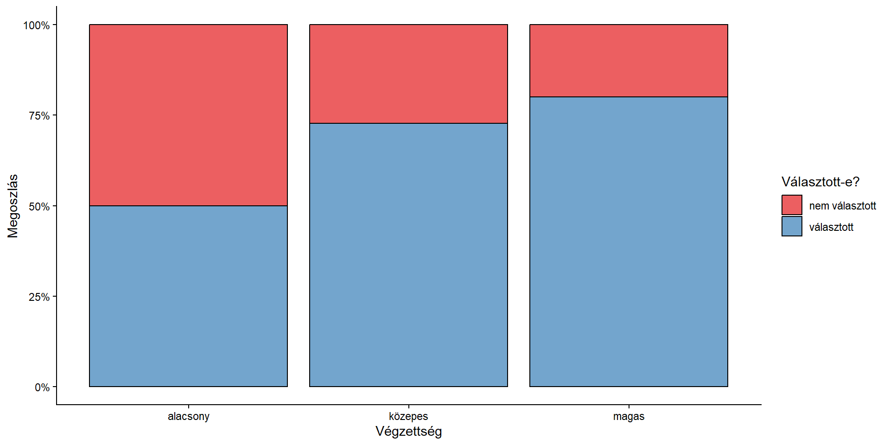

| nem választott | választott | összesen | |
|---|---|---|---|
| alacsony | 20 | 20 | 40 |
| közepes | 30 | 80 | 110 |
| magas | 10 | 40 | 50 |
| összesen | 60 | 140 | 200 |
2. előadás: Kereszttábla
Összefügg-e a két alacsony
mérési szintű változó
az alapsokaságban?
Összefügg…
Összefügg-e az iskolai végzettség azzal, hogy valaki elmegy-e választani?
Változók:
Változók összefüggése a kérdés.
A változóink mérési szintje:
A kérdésnek és a változóknak a kereszttábla-elemzés felel meg
\(H_0\): A két változó egymástól független
\(H_1\): A két változó nem független
Független: az egyik ismerete nem jelent plusz információt a másik becsléséhez
Függő: az egyik ismeretében jobban tudjuk becsülni a másikat
Válasszuk a szokásos 5%-os szintet.
| nem választott | választott | összesen | |
|---|---|---|---|
| alacsony | 20 | 20 | 40 |
| közepes | 30 | 80 | 110 |
| magas | 10 | 40 | 50 |
| összesen | 60 | 140 | 200 |
| nem választott | választott | összesen | |
|---|---|---|---|
| alacsony | 50.0% | 50.0% | 100.0% |
| közepes | 27.3% | 72.7% | 100.0% |
| magas | 20.0% | 80.0% | 100.0% |
| összesen | 30.0% | 70.0% | 100.0% |
| nem választott | választott | összesen | |
|---|---|---|---|
| alacsony | 33.3% | 14.3% | 20.0% |
| közepes | 50.0% | 57.1% | 55.0% |
| magas | 16.7% | 28.6% | 25.0% |
| összesen | 100.0% | 100.0% | 100.0% |
| nem választott | választott | összesen | |
|---|---|---|---|
| alacsony | 10.0% | 10.0% | 20.0% |
| közepes | 15.0% | 40.0% | 55.0% |
| magas | 5.0% | 20.0% | 25.0% |
| összesen | 30.0% | 70.0% | 100.0% |
| nem választott | választott | összesen | |
|---|---|---|---|
| alacsony | 50.0% | 50.0% | 100.0% |
| közepes | 27.3% | 72.7% | 100.0% |
| magas | 20.0% | 80.0% | 100.0% |
| összesen | 30.0% | 70.0% | 100.0% |

\(\chi^2\) (Khí-négyzet) próba:
\[ \chi^2=\sum_{i=1}^{s}\sum_{j=1}^{o}\frac{(m_{ij}-e_{ij})^2}{e_{ij}} \]
ahol:
\[ P(A_1|B_1) = P(A_1|B_2) = ... = P(A_1) \]
| nem választott | választott | összesen | |
|---|---|---|---|
| alacsony | 20 | 20 | 40 |
| közepes | 30 | 80 | 110 |
| magas | 10 | 40 | 50 |
| összesen | 60 | 140 | 200 |
\[ \begin{align} P(NV) &= ? \\ P(NV|A) &= ? \\ e_{11} &= ? \end{align} \]
| nem választott | választott | összesen | |
|---|---|---|---|
| alacsony | 20 | 20 | 40 |
| közepes | 30 | 80 | 110 |
| magas | 10 | 40 | 50 |
| összesen | 60 | 140 | 200 |
\[ \begin{align} P(NV) &= \frac{m_{*1}}{N} \\ P(NV|A) &= \frac{m_{*1}}{N} \text{ (Függetlenség esetén igaz)} \\ e_{11} &= \frac{m_{1*}\ast m_{*1}}{N} \end{align} \]
| nem választott | választott | összesen | |
|---|---|---|---|
| alacsony | 20 | 20 | 40 |
| közepes | 30 | 80 | 110 |
| magas | 10 | 40 | 50 |
| összesen | 60 | 140 | 200 |
\[ \begin{align} P(NV|A)=P(NV) &= \frac{60}{200} \\ e_{11} &= \frac{40*60}{200} \end{align} \]
\[ e_{ij} = \frac{m_{i*}*m_{*j}}{N} \]
\[ \begin{align}e_{11}&=\frac{m_{1*}\ast m_{*1}}{N}=\frac{40 \ast 60}{200}&=12\\ e_{12}&=\frac{m_{1*}\ast m_{*2}}{N}=\frac{40 \ast 140}{200}&=28\\ e_{21}&=\frac{m_{2*}\ast m_{*1}}{N}=\frac{110 \ast 60}{200}&=33\\ e_{22}&=\frac{m_{2*}\ast m_{*2}}{N}=\frac{110 \ast 140}{200}&=77\\ e_{31}&=\frac{m_{3*}\ast m_{*1}}{N}=\frac{50 \ast 60}{200}&=15\\ e_{32}&=\frac{m_{3*}\ast m_{*2}}{N}=\frac{50 \ast 140}{200}&=35\end{align} \]
| nem választott | választott | összesen | |
|---|---|---|---|
| alacsony | 12 | 28 | 40 |
| közepes | 33 | 77 | 110 |
| magas | 15 | 35 | 50 |
| összesen | 60 | 140 | 200 |
Alkalmazás feltételei:
\[ \begin{align} \chi^2&=\sum_{i=1}^{s}\sum_{j=1}^{o}\frac{(m_{ij}-e_{ij})^2}{e_{ij}} \\ df &= (s-1)\ast(o-1) \end{align} \]
\[\begin{aligned} \chi^2&=\frac{(20-12)^2}{12}+\frac{(20-28)^2}{28} \\ & +\frac{(30-33)^2}{33}+\frac{(80-77)^2}{77} \\ & +\frac{(10-15)^2}{15}+\frac{(40-35)^2}{35}=10.39 \end{aligned}\]\[ df=(3-1)\ast(2-1)=2 \]
Ez alapján az összefüggés szignifikáns.
Mit jelent ez?
A szignifikáns összefüggés még nem feltétlenül erős is!
Az összefüggés erejének becslésére asszociációs mérőszámokat használunk.
A legfontosabbak a \(\phi\) és a Cramer-féle V
Olyan kereszttáblák esetében használható, amelyek valamelyik dimenziója 2.
Képlete
\[ \phi=\sqrt{\frac{\chi^2}{N}} \]
Értéke 0 (függetlenség) és 1 (függvényszerű kapcsolat) közé esik
\[ \phi=\sqrt{\frac{10.39}{200}}=0.23 \]
Ha a kereszttábla mindkét dimenziója legalább 3, a φ értéke 1-nél nagyobb is lehet.
Ezért egy apró korrekciót alkalmazva kapjuk:
\[ V=\sqrt{\frac{\chi^2}{N*min(s-1, o-1)}}=\frac{\phi}{\sqrt{min(s-1,o-1)}} \]